In 2020, we published a study on digital sobriety requirements in public procurement. With the publication this summer of the decree n° 2022-1084 of July 29, 2022, we thought it would be a good idea to take stock of the sites of cities and communities.
This decree concerns municipalities and communities of more than 50,000 inhabitants, requiring them to develop a responsible digital strategy focusing in particular on reducing the environmental footprint of digital.
We therefore remeasured the sites of the 29 cities and 17 metropolises already discussed in order to compare the results obtained.
The measurements here only concern the first page of each site. Ideally, a larger sample of pages should be taken into account, or even compared on the basis of a user path common to all these sites. However, this approach already allows us to establish points of comparison and to identify some good practices.
Metropolitan sites
The Ecoscore as defined by Greenspector allows a good overview of each site. We will therefore start by looking at its evolution between the initial measurements and the re-measurements.
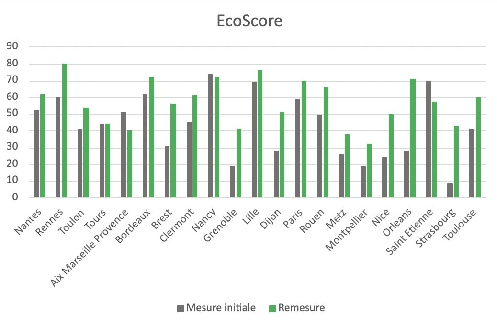
In most cases, there is an improvement (even slight) in the EcoScore. The cities of Brest, Grenoble, Nice, Orleans and Strasbourg stand out with a very strong increase. For some cities, the trend is downward.
While Nancy had the best EcoScore (74), Rennes takes the lead with an EcoScore of 80.
However, it can be estimated that it would be important for each city to obtain an EcoScore of at least 50/100, which is still not the case for some.
Estimating the environmental impacts of different sites is another good basis for comparison.
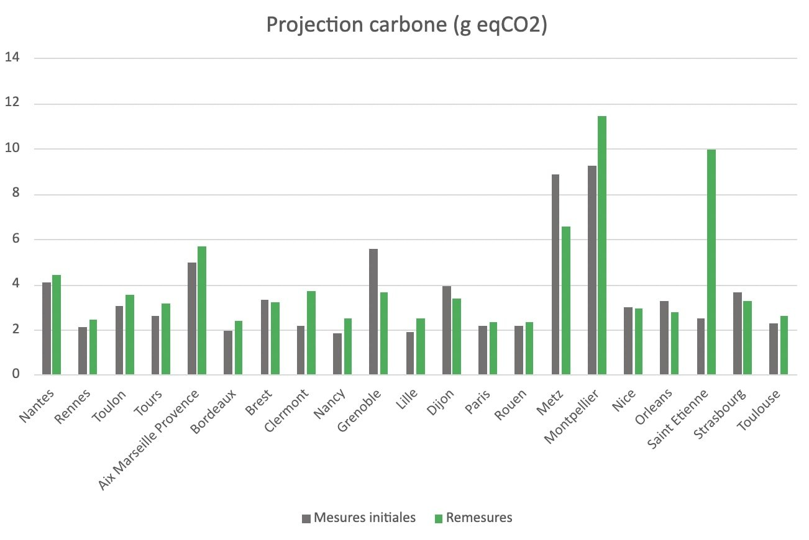
We note here that the trend is globally upward for the measured sites with sometimes a strong difference between the initial measurement and the remeasurement. The case of the Saint-Etienne metropolis illustrates this very well.
Further analysis of selected sites
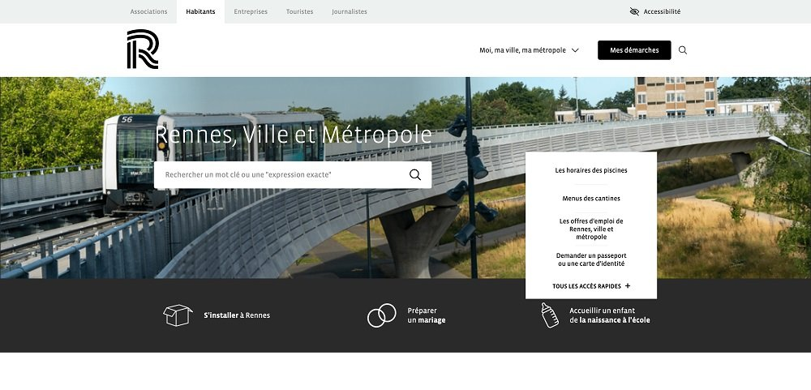
This site appears very light. The images, even if they are rather numerous, are light but should be lazy-loaded (load them only when they are displayed). The use of a variable font would limit the requests. The carousel on the home page does not bring much. The fact that it is in autoplay may lead to overconsumption in addition to potentially causing accessibility problems. The Accessibility page would be more relevant if it stated the compliance with the RGAA (Référentiel Général d’Amélioration de l’Accessibilité) and presented the multi-year accessibility plan for the site. The few animations, even if they are not intrusive, seem superfluous and can lead to overconsumption.
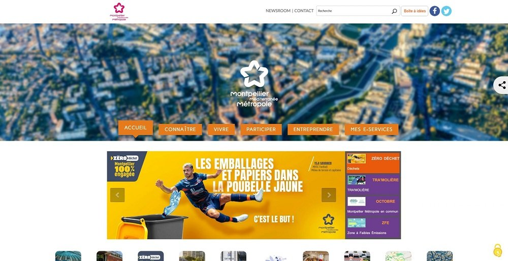
Following the remeasurement, the site of the metropolis of Montpellier is the least well placed. Leaving the site open, we quickly observe more than 300 HTTP requests for more than 30 MB of transferred data. Even after the site is loaded, the requests continue to accumulate.
The homepage is particularly heavy, especially in terms of content: lots of images, autoplay carousels, lots of third-party services.
If quick gains are possible through technical optimization, in-depth work is required, particularly through a more sober approach to design.
Summary of measures for metropolitan websites
| Application (Ville) | Impact per visit (g CO2e) | Impact per day for 10000 users (2x/day) (kg CO2e) | Impact total par an (kg CO2e) |
|---|---|---|---|
| TAM (Montpellier) | 1,1 | 22 | 8030 |
| Ilévia (Lille) | 1,1 | 22 | 8030 |
| CTS (Strasbourg) | 1.2 | 24 | 8760 |
| Tisseo (Toulouse) | 1.2 | 24 | 8760 |
| RTM (Marseille) | 1.2 | 24 | 8760 |
| TCL (Lyon) | 1.2 | 24 | 8760 |
| TAN (Nantes) | 1.3 | 26 | 9490 |
| Azur (Nice) | 1.5 | 30 | 10950 |
| TBM (Bordeaux) | 1.5 | 30 | 10950 |
| RATP (Paris) | 2.4 | 48 | 17520 |
We have calculated the average of these data. On the general level we notice that the average ecoscore is 50, the energy consumed is 5,65 mAh, the percentage of CPU used is 2,16, the data exchanged is 6,25 MB, the RAM used is 704 MB, the number of requests is 103. Concerning the environmental impact we can observe that the carbon impact is 0,51 gEqCO2, the water footprint is 0,070 Liters and the soil footprint is 0,68 m2.
By distinguishing the measurements from the remeasurements here are the averages that we obtain:
| Nom | Taille APK (Mo) | Données échangées (Mo) | Décharge totale de la batterie (mAh) |
|---|---|---|---|
| Subway Surfers | 177,1 | 5,3 | 18,3 |
| Stumble Guys | 198 | 46,4 | 44,9 |
| Roblox | 160,8 | 17 | 15,4 |
| Candy Crush Saga | 92,2 | 12,1 | 22,3 |
| Race Master 3D | 182,6 | 33,2 | 17,1 |
| 8 Ball Pool | 89,9 | 0 | 7,8 |
| FIFA Mobile | 180,4 | 161,5 | 34,3 |
| Merge Master - Dinoasaur game | 175 | 26,1 | 24,5 |
| Garena Free Fire | 400,8 | 5,7 | 19,8 |
| Bridge Race | 170,9 |
City websites
Here again, we start by looking at the EcoScore of the sites of the cities in the sample.
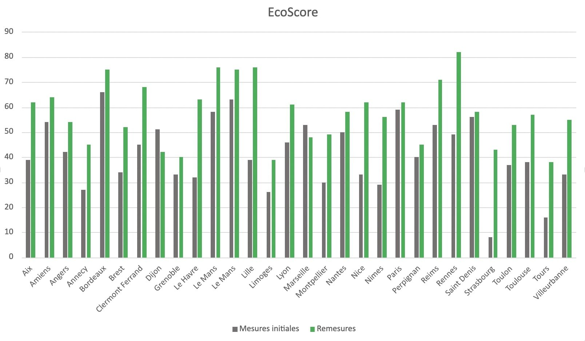
Even more than for the metropolises, the trend for the EcoScore is clearly upward.
In addition to the site of the city of Rennes (already discussed in the context of metropolises), the sites of the cities of Le Havre, Lille and especially Strasbourg have improved significantly. It is also the site of the city of Rennes that presents the best EcoScore. We note in passing the interesting choice of having the same site for the city and the metropolis. As for the lowest EcoScore, it goes to the site of the city of Tours.
Now let’s look at the environmental footprint of these sites.
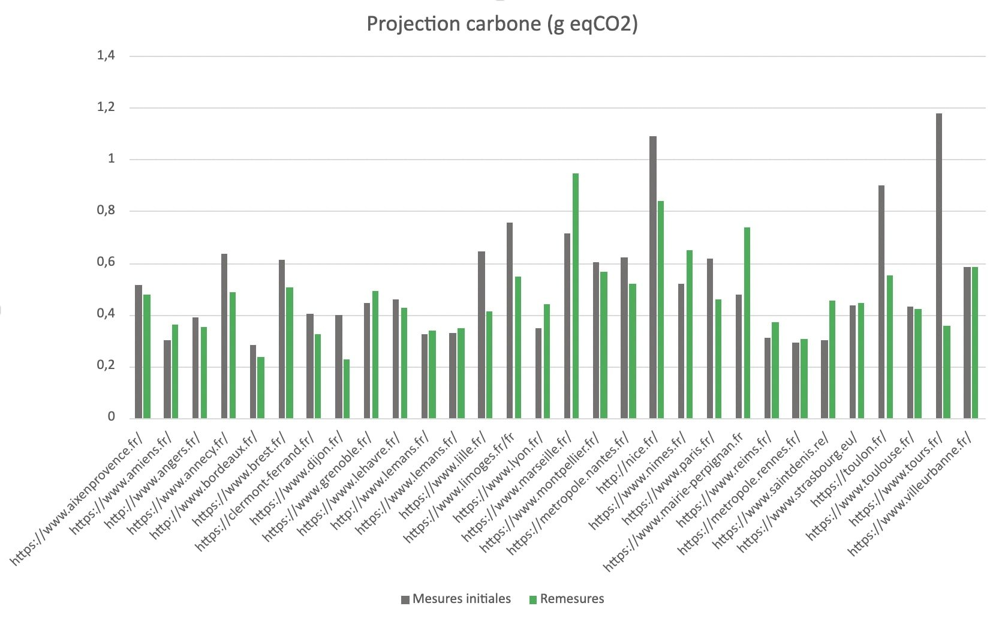
The overall trend is downward, which is a very good thing.
Further analysis of selected sites
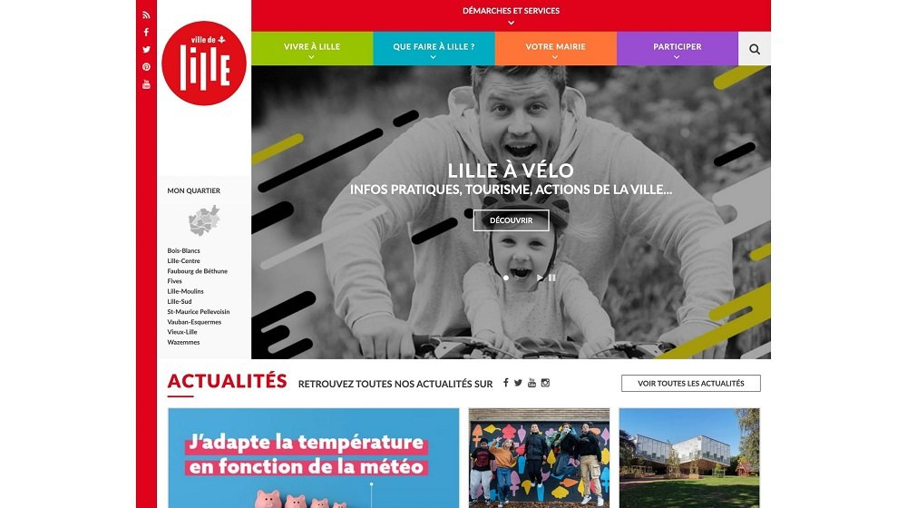
Even if this site has evolved well since the first measurements, there are still areas of improvement to explore.
Many HTTP requests, several MB of data exchanged and some 404 errors among the resources to recover. 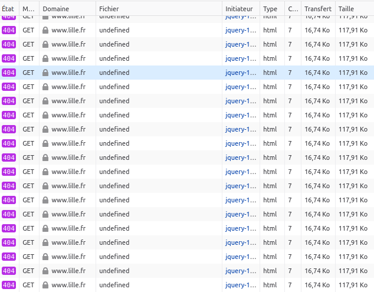
We note here in passing the interest of having an HTML 404 page as light as possible because this is often what the server will return if it does not find what is requested. Note that it is possible to modify this via the server configuration in order to send a simple message instead. The best thing is of course to make sure that you don’t go looking for elements that cannot be found.
The homepage is very busy, with an auto-scrolling carousel and many images and content. Il serait avantageux d’utiliser une font variable et d’éviter de charger toutes les icônes de FontAwesome. Some images, weighing several hundred kb, should be optimized.
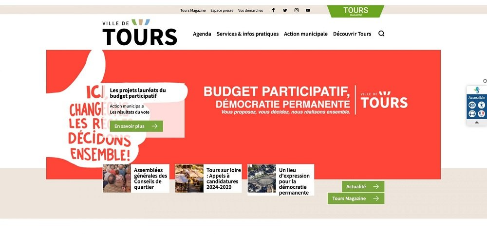
In a rather classical way, there are many images here, some of which should be optimized.
However, at first glance, the home page does not seem so busy. It is therefore necessary to dig a little to better understand what makes the site so heavy.
We find about ten queries for fonts and we note in passing Google fonts (which can, let’s remember, cause concern with respect to the RGPD).
Several requests also seem to correspond to video. But most of the requests come from JS and CSS files. A closer look at the domains of origin of the requests reveals one of the explanations for the weight of the site. A closer look at the domains of origin of the requests reveals one of the explanations for the weight of the site.
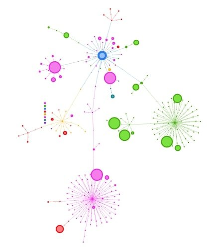
This firework is provided by the RequestMap tool developed by Simon Hearne (already mentioned during the analysis of requests from an Android application). If we don’t have the details, we can see that there are many requests and that most of them come from other domains.
The Domains tab of Webpagetest allows us to learn a little more:
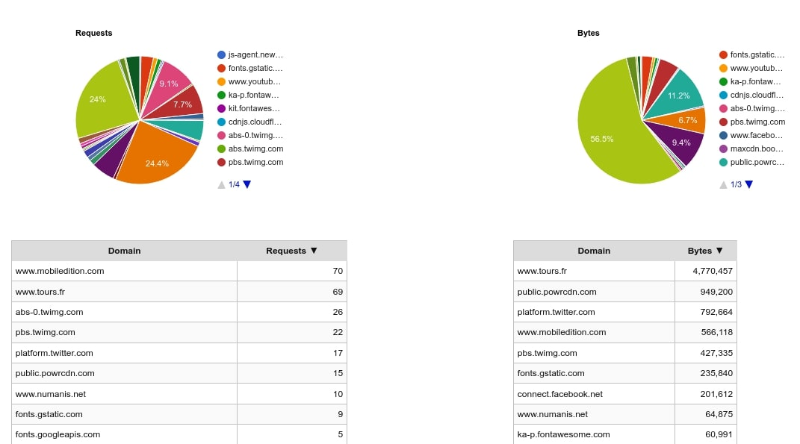
This is only an excerpt but it shows several interesting elements:
Most of the requests (in terms of numbers but also in terms of weight) come from other domains
Most requests came from mobiledition.com
Mobiledition.com proposes to those whose site is not responsive to generate a version of their site specially thought for a display on mobile. The intention is not bad but the approach is rather aberrant from the point of view of ecodesign. Indeed, this overlay will exist on top of the original site and will be automatically refreshed at each update of the site. Nearly 10 years after the appearance of the notion of responsive design, it would be important that all sites can adapt to different devices or even that they are thought mobile-first (first for mobile and then extend to other media). Or even offline-first in order to be able to cope more easily with degraded connections.
In summary, it would be important to rethink the site in order to limit as much as possible the use of third party services to make it less impactful.
Measurement results for the cities’ websites
| Nom | Nom package | Version |
|---|---|---|
| Subway Surfers | com.kiloo.subwaysurf | 3.16.1 |
| Stumble Guys | com.kitkagames.fallbuddies | 0.54 |
| Roblox | com.roblox.client | 2.589.593 |
| Candy Crush Saga | com.king.candycrushsaga | 1.259.0.1 |
| Race Master 3D | com.easygames.race | 4.0.4 |
| 8 Ball Pool | com.miniclip.eightballpool | 5.13.3 |
| FIFA Mobile | com.ea.gp.fifamobile | 18.1.03 |
| Merge Master - Dinoasaur game | com.fusee.MergeMaster | 3.11.0 |
| Garena Free Fire | com.dts.freefireth | 1.100.1 |
| Bridge Race | com.Garawell.BridgeRace | 3.23 |
We have calculated the average of these data. On the general level we notice that the average ecoscore is 49, the energy consumed is 5,57 mAh, the percentage of CPU used is 2,22, the data exchanged is 6,36 MB, the RAM used is 689 MB, the number of requests is 99. Concerning the environmental impact we can observe that the carbon impact is 0,50 gEqCO2, the water footprint is 0,069 Liters and the soil footprint is 0,668 m2.
By dissociating the measurements from the remeasurements here are the averages that we obtain:
| App name | Package name | Version |
|---|---|---|
| Subway Surfers | com.kiloo.subwaysurf | 3.16.1 |
| Stumble Guys | com.kitkagames.fallbuddies | 0.54 |
| Roblox | com.roblox.client | 2.589.593 |
| Candy Crush Saga | com.king.candycrushsaga | 1.259.0.1 |
| Race Master 3D | com.easygames.race | 4.0.4 |
| 8 Ball Pool | com.miniclip.eightballpool | 5.13.3 |
| FIFA Mobile | com.ea.gp.fifamobile | 18.1.03 |
| Merge Master - Dinoasaur game | com.fusee.MergeMaster | 3.11.0 |
| Garena Free Fire | com.dts.freefireth | 1.100.1 |
| Bridge Race | com.Garawell.BridgeRace | 3.23 |
The initial measurements were conducted on a Samsung Galaxy S7 smartphone running Android 8.
The remeasurements were performed on a Samsung Galaxy S9 smartphone running Android 10. The measurements were performed through our Greenspector Benchmark Runner tool, which allows automated tests.
Detail of the scenarios :
- Loading the application
- Reading the website in foreground
- Reading the page with scroll
- Inactivity of the website in background
Each measurement is the average of 3 homogeneous measurements (with a low standard deviation). The consumptions measured on the smartphone connected to a wifi network can be different when the smartphone is connected to a wired network. For each iteration, the cache is cleared beforehand.
Discover how Greenspector evaluates the environmental impact of digital services.